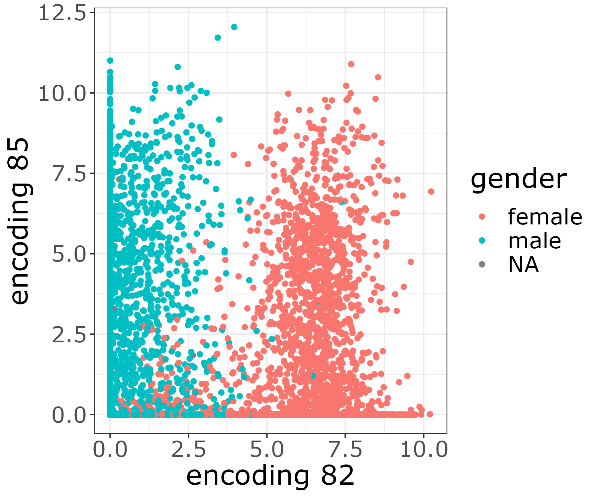
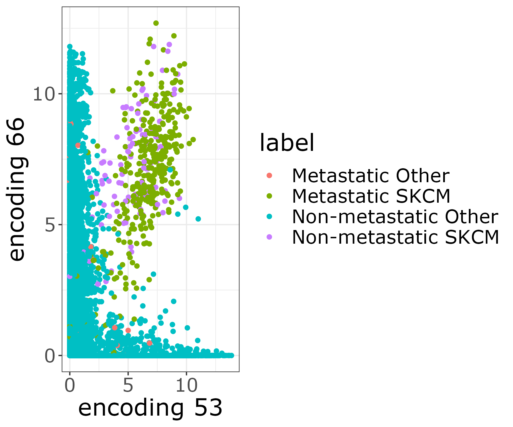
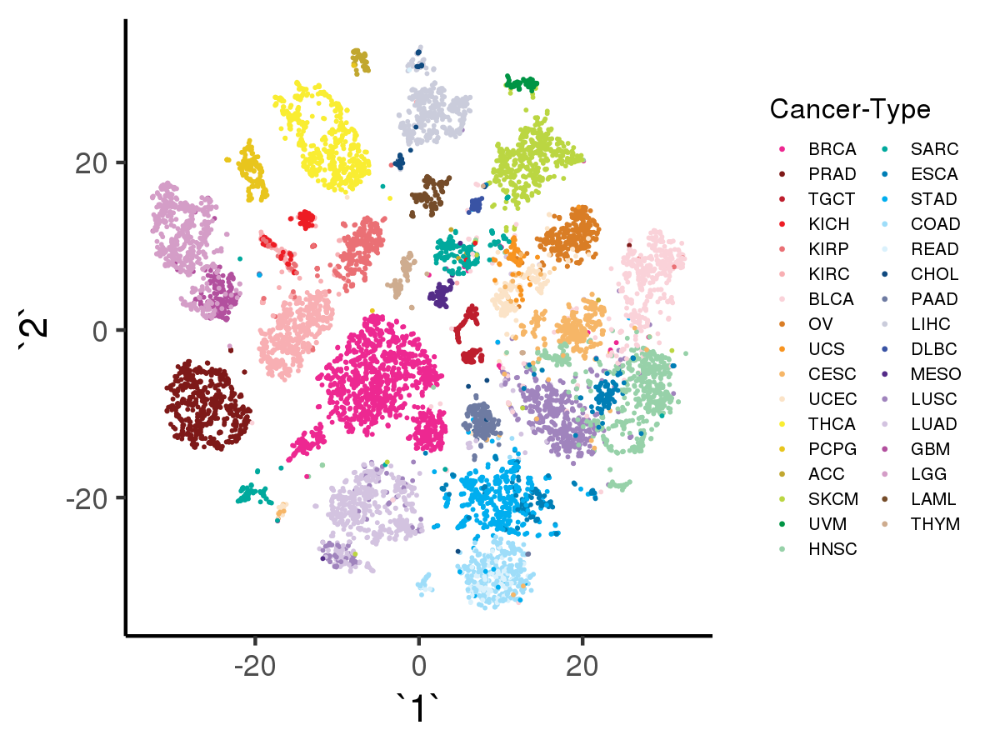
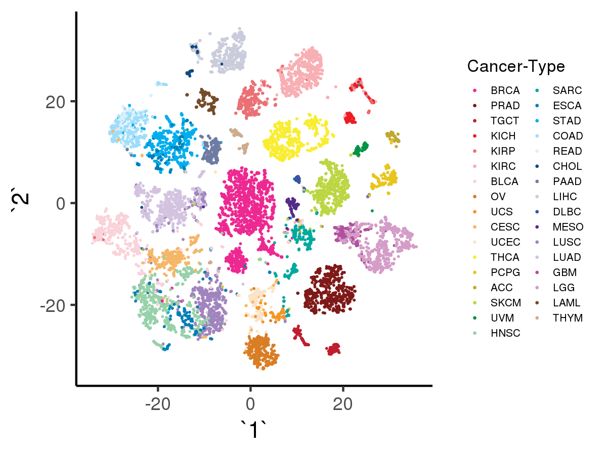
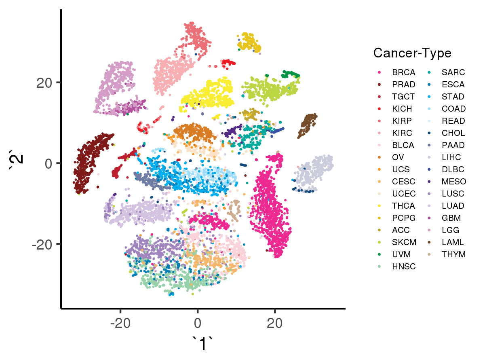

Tybalt employs Keras deep learning framework to implement
a variational autoencoder (VAE), capable of generating meaningful latent spaces
for image and text data. Tybalt has been trained
on The Cancer Genome Atlas (TCGA) pan-cancer RNA-seq data
and used to identify specific patterns in the VAE encoded features.
This application is being used as a biological example in class #3 of the course
"Deep Learning by Example on Biowulf".
Allocate an interactive session and run the program. Sample session:
[user@biowulf]$ sinteractive --mem=36g --gres=gpu:v100,lscratch:10 [user@cn3200 ~]$module load Tybalt [+] Loading libarchive 3.3.2 [+] Loading singularity on cn4470 [+] Loading python 3.6 ... [+] Loading cuDNN 7.0 libraries... [+] Loading CUDA Toolkit 9.0.176 ... [+] Loading gcc 7.2.0 ... [+] Loading GSL 2.4 for GCC 7.2.0 ... [+] Loading openmpi 3.0.0 for GCC 7.2.0 [+] Loading R 3.5.0_build2 [+] Loading Tybalt 0.1.3 ...The Tybalt code implemented in Biowulf currently includes the folloeing executables:
[user@cn3200]$ ls $TYBALT_SRC download_data.sh options.py preprocess_data.py predict.py models.py parse_hpo_results.py train.py visualize.R [user@cn3200]$ cp -r $TYBALT_SRC/* .To download (raw) data, run the command
[user@cn3200]$ download_data.shthat will create a subfolder tree data/raw in the current folder:
[user@cn3200]$ tree data
data
└── raw
├── Gistic2_CopyNumber_Gistic2_all_thresholded.by_genes
├── HiSeqV2
├── PANCAN_clinicalMatrix
├── PANCAN_mutation
└── samples.tsv
The data pre-processing command:
[user@cn3200]$ preprocess_data.pywill produce a number of other files in the subfolder data:
[user@cn3200]$ tree data data ├── clinical_data.tsv ├── copy_number_gain.tsv.gz ├── copy_number_loss.tsv.gz ├── oncokb_genetypes.tsv ├── pancan_mutation_burden.tsv ├── pancan_mutation.tsv.gz ├── pancan_scaled_rnaseq.tsv.gz ├── pancan_scaled_zeroone_rnaseq.tsv.gz ├── raw │ ├── Gistic2_CopyNumber_Gistic2_all_thresholded.by_genes │ ├── HiSeqV2 │ ├── PANCAN_clinicalMatrix │ ├── PANCAN_mutation │ └── samples.tsv └── status_matrix.tsv.gzSince this command will take a while to complete, alternatively you can download the already pre-processed data from a system foder:
[user@cn3200]$ cp -r $TYBALT_DATA/* .To train an autoencoder on the pre-processed data, use the script train.py:
[user@cn3200]$ train.py -h
...
usage: train.py [-h] [-d depth] [-e num_epochs] [-E executions_per_trial]
[-F hyperband_factor] [--hidden_dim hidden_dim]
[-I hyperband_iterations] [-k kappa] [-l learning_rate]
[-m model_name] [-N noise] [-o optimizer] [-p prefix]
[-s sparsity] [-T num_trials] [-v] [--val_split val_split]
[-W wall_time] [-z latent_dim] [-b batch_size]
[-f output_filename] [--hpo hpo_method]
optional arguments:
-h, --help show this help message and exit
-d depth, --depth depth
Number of layers between input and latent layer;
default=1
-e num_epochs, --num_epochs num_epochs
# of epochsl default=100
-E executions_per_trial, --executions_per_trial executions_per_trial
# of executions per HPO trial; default=3
-F hyperband_factor, --hb_factor hyperband_factor
division factor used by the hyperband HPO algorithm;
default=2
--hidden_dim hidden_dim
Dimensionality of the first hidden layer
-I hyperband_iterations, --hb_iters hyperband_iterations
# of hyperband iterations; default=100
-k kappa, --kappa kappa
How fast to linearly ramp up KL loss
-l learning_rate, --lr learning_rate
learning rate; default=1.e-5
-N noise, --noise noise
How much Gaussian noise to add during training
-o optimizer, --optimizer optimizer
optimizer: adam | rmsprop
-p prefix, --checkpoint_prefix prefix
prefix of the output checkpoint file
..h5
-s sparsity, --sparsity sparsity
How much L1 regularization penalty to apply
-T num_trials, --max_trials num_trials
max # of trials in hp optimization; default=50
-v, --verbose increase the verbosity level of output
--val_split val_split
increase the verbosity level of output
-W wall_time, --wall_time wall_time
Wall time for HPO with CANDLE; default="24:00:00"
-z latent_dim, --latent_dim latent_dim
Dimensionality of the latent space
-b batch_size, --bs batch_size
batch size; default=50
-f output_filename, --output_filename output_filename
The name of the file to store results
--hpo hpo_method hpo method: random | bayesian | hyperband,
default=None
required arguments:
-m model_name, --model_name model_name
model name: vae | adage
The script will use as input a pre-defined file from the folder data. It requires specification of the network model to be used: 'vae' for the variational autoencoder and 'adage' for denoising autoencoder. [user@cn3200]$ train.py -m vae ... Train on 9413 samples, validate on 1046 samples Epoch 1/50 9413/9413 [==============================] - 3s 322us/step - loss: 2918.8174 - val_loss: 2815.0830 Epoch 2/50 9413/9413 [==============================] - 2s 202us/step - loss: 2786.0095 - val_loss: 2780.5930 ... [user@cn3200]$ train.py -m adage ...Hyperparameter optimization is performed by train.py with --hpo option. The code supports optimization of any of the following six hyperparameters:
[user@cn3200]$ ./train.py -m vae --hpo random -d 1,2 --hidden_dim=100,300 -k 0.1,1. -b 50,100,200 -e 50,100 -l 0.0005,0.001If ranges of variation are specified for only a subset of these hyperparameters, then for the rest of the hyperparameters their default values will be used. This command will produce a folder of results named ktuner_vae_random. To extract the results sorted by objective score, run the command:
[user@cn3200]$ parse_hpo_results.py ktuner_vae_random score= 0.879 depth= 1 hidden_dim=300 kappa=0.100 batch_size=200 num_epochs= 50 learning_rate=0.0025 score= 0.879 depth= 2 hidden_dim=300 kappa=1.000 batch_size=200 num_epochs= 10 learning_rate=0.001 score= 0.88 depth= 2 hidden_dim=300 kappa=0.100 batch_size=100 num_epochs= 50 learning_rate=0.0005 score= 0.88 depth= 2 hidden_dim=100 kappa=1.000 batch_size=200 num_epochs= 100 learning_rate=0.0025 score= 0.88 depth= 1 hidden_dim=300 kappa=0.100 batch_size=200 num_epochs= 10 learning_rate=0.001 score= 0.882 depth= 1 hidden_dim=100 kappa=0.010 batch_size= 50 num_epochs= 25 learning_rate=0.0025 score= 0.882 depth= 1 hidden_dim=300 kappa=0.010 batch_size= 50 num_epochs= 10 learning_rate=0.002 score= 0.882 depth= 1 hidden_dim=100 kappa=0.050 batch_size= 50 num_epochs= 10 learning_rate=0.001 ...In a similar way, hyperparameter optimization can be peforrmed with other types of tuners or with alternative "adage" model. For example:
[user@cn3200]$ train.py -m vae --hpo hyperband -d 2,3,4,5,6,7,8,9,10 --hidden_dim 300,500,700,1000,3000 ... [user@cn3200]$ ./parse_hpo_results.py ktuner_vae_hyperband score= 0.882 depth= 3 hidden_dim=1000 kappa=1.000 batch_size= 50 num_epochs= 100 learning_rate=0.0005 score= 0.882 depth= 2 hidden_dim=1000 kappa=1.000 batch_size= 50 num_epochs= 100 learning_rate=0.0005 score= 0.882 depth= 3 hidden_dim=500 kappa=1.000 batch_size= 50 num_epochs= 100 learning_rate=0.0005 score= 0.883 depth= 3 hidden_dim=700 kappa=1.000 batch_size= 50 num_epochs= 100 learning_rate=0.0005 score= 0.883 depth= 2 hidden_dim=500 kappa=1.000 batch_size= 50 num_epochs= 100 learning_rate=0.0005 score= 0.883 depth= 2 hidden_dim=300 kappa=1.000 batch_size= 50 num_epochs= 100 learning_rate=0.0005 score= 0.883 depth= 3 hidden_dim=300 kappa=1.000 batch_size= 50 num_epochs= 100 learning_rate=0.0005 score= 0.885 depth= 2 hidden_dim=700 kappa=1.000 batch_size= 50 num_epochs= 100 learning_rate=0.0005 score= 0.889 depth= 4 hidden_dim=500 kappa=1.000 batch_size= 50 num_epochs= 100 learning_rate=0.0005 score= 0.891 depth= 8 hidden_dim=300 kappa=1.000 batch_size= 50 num_epochs= 100 learning_rate=0.0005 score= 0.894 depth= 6 hidden_dim=700 kappa=1.000 batch_size= 50 num_epochs= 100 learning_rate=0.0005 score= 0.894 depth= 7 hidden_dim=300 kappa=1.000 batch_size= 50 num_epochs= 100 learning_rate=0.0005 score= 0.894 depth= 9 hidden_dim=500 kappa=1.000 batch_size= 50 num_epochs= 100 learning_rate=0.0005 score= 0.894 depth= 7 hidden_dim=500 kappa=1.000 batch_size= 50 num_epochs= 100 learning_rate=0.0005 score= 0.894 depth= 5 hidden_dim=500 kappa=1.000 batch_size= 50 num_epochs= 100 learning_rate=0.0005 score= 0.894 depth= 5 hidden_dim=700 kappa=1.000 batch_size= 50 num_epochs= 100 learning_rate=0.0005 score= 0.894 depth= 8 hidden_dim=700 kappa=1.000 batch_size= 50 num_epochs= 100 learning_rate=0.0005 score= 0.894 depth= 6 hidden_dim=300 kappa=1.000 batch_size= 50 num_epochs= 100 learning_rate=0.0005 score= 0.896 depth= 5 hidden_dim=300 kappa=1.000 batch_size= 50 num_epochs= 100 learning_rate=0.0005 score= 0.917 depth= 6 hidden_dim=500 kappa=1.000 batch_size= 50 num_epochs= 100 learning_rate=0.0005 score= 1.02 depth=10 hidden_dim=3000 kappa=1.000 batch_size= 50 num_epochs= 100 learning_rate=0.0005 ... [user@cn3200]$ ./train.py -m adage --hpo bayesian -d 2,3,4 --hidden_dim 500,700,1000 -b 50,100 ... [user@cn3200]$ parse_hpo_results.py ktuner_adage_bayesian score= 2.77 depth= 2 hidden_dim=500 kappa=1.000 batch_size= 50 num_epochs= 100 learning_rate=0.0005 score= 2.8 depth= 2 hidden_dim=500 kappa=1.000 batch_size= 50 num_epochs= 100 learning_rate=0.0005 score= 2.86 depth= 2 hidden_dim=500 kappa=1.000 batch_size= 50 num_epochs= 100 learning_rate=0.0005 score= 2.89 depth= 2 hidden_dim=500 kappa=1.000 batch_size= 50 num_epochs= 100 learning_rate=0.0005 score= 2.89 depth= 2 hidden_dim=500 kappa=1.000 batch_size= 50 num_epochs= 100 learning_rate=0.0005 score= 2.9 depth= 2 hidden_dim=500 kappa=1.000 batch_size= 50 num_epochs= 100 learning_rate=0.0005 score= 2.98 depth= 2 hidden_dim=500 kappa=1.000 batch_size= 50 num_epochs= 100 learning_rate=0.0005 score= 3.02 depth= 2 hidden_dim=500 kappa=1.000 batch_size= 50 num_epochs= 100 learning_rate=0.0005 score= 3.02 depth= 2 hidden_dim=500 kappa=1.000 batch_size= 50 num_epochs= 100 learning_rate=0.0005 score= 3.03 depth= 2 hidden_dim=500 kappa=1.000 batch_size= 50 num_epochs= 100 learning_rate=0.0005 score= 3.06 depth= 2 hidden_dim=500 kappa=1.000 batch_size= 50 num_epochs= 100 learning_rate=0.0005 score= 3.15 depth= 2 hidden_dim=500 kappa=1.000 batch_size= 50 num_epochs= 100 learning_rate=0.0005 score= 3.17 depth= 2 hidden_dim=500 kappa=1.000 batch_size= 50 num_epochs= 100 learning_rate=0.0005 score= 3.22 depth= 2 hidden_dim=500 kappa=1.000 batch_size= 50 num_epochs= 100 learning_rate=0.0005 score= 3.24 depth= 2 hidden_dim=500 kappa=1.000 batch_size= 50 num_epochs= 100 learning_rate=0.0005 score= 3.24 depth= 2 hidden_dim=500 kappa=1.000 batch_size= 50 num_epochs= 100 learning_rate=0.0005 score= 3.26 depth= 2 hidden_dim=500 kappa=1.000 batch_size= 50 num_epochs= 100 learning_rate=0.0005 score= 3.27 depth= 2 hidden_dim=500 kappa=1.000 batch_size= 50 num_epochs= 100 learning_rate=0.0005 score= 3.3 depth= 2 hidden_dim=500 kappa=1.000 batch_size= 50 num_epochs= 100 learning_rate=0.0005 ... ...Prediction of the latent variables is performed by predict.py:
[user@cn3200]$ predict.py -h
Using TensorFlow backend.
usage: predict.py [-h] [-c FIRST_LAYER] [-d DEPTH] [-m model_name]
[-N NOISE] [-o test_results] [-p in_prefix]
[-s SPARSITY]
optional arguments:
-h, --help show this help message and exit
-c FIRST_LAYER, --first_layer FIRST_LAYER
Dimensionality of the first hidden layer
-d DEPTH, --depth DEPTH
Number of layers between input and latent layer;
default=1
-N NOISE, --noise NOISE
How much Gaussian noise to add during training
-o test_results, --output test_results
output file with test results;
default='test_results.h5'
-p in_prefix, --checkpoint_prefix in_prefix
prefix of the input checkpoint file
..h5
required arguments:
-m model_name, --model_name model_name
model name: vae | adage
[user@cn3200]$ predict.py -m vae
...
[user@cn3200]$ predict.py -m adage
...
[user@cn3200]$ predict.py -m rnaseq
...
The latter command will use as input the preprocessed RNAseq data (of dimention 5000), rather than the data
from the latent space, encoded by either VAE or ADAGE encoder (of dimension 100).
Make sure you set up a graphical X11 connection. Both NX and MobaXterm work well for Windows users, while XQuartz works well for Mac users.
2) Make sure you performed the data downloading, preprocessing, training and prediction steps described above. These steps produce the input data for visualizations. Alternatively, you can simply download the already processed data:[user@cn3200]$ cp -r $TYBALT_DATA/* .3) load R module and create an output folder figures:
[user@cn3200]$ module load R/4.0.0 [user@cn3200]$ mkdir -p figuresNow you should be able to run the script visualize.R with appropriate command line option.
[user@cn3200]$ visualize.R -g The resulting image file will be stored in the output folder figures.
[user@cn3200]$ visualize.R -t
[user@cn3200]$ visualize.R -v
[user@cn3200]$ visualize.R -r Likewise, with option -a the script will visualize the tSNE results using as input the data encoded by denoising autoencoder with adage model, with input data shape = (10459, 100)):
[user@cn3200]$ visualize.R -a
[user@cn3200 ~]$ exit salloc.exe: Relinquishing job allocation 46116226 [user@biowulf ~]$